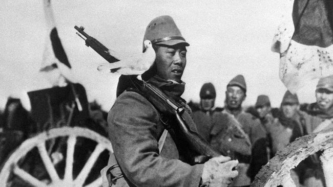
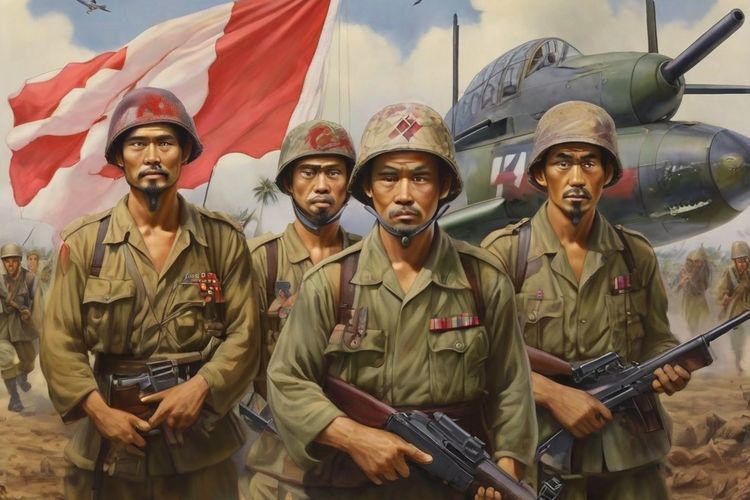

Sebelum pendudukan Jepang, Indonesia, yang saat itu dikenal sebagai Hindia Belanda, berada di bawah kekuasaan kolonial Belanda. Selama Perang Dunia II, Belanda terlibat dalam konflik melawan Jepang, yang merupakan salah satu kekuatan Axis. Pada saat yang sama, Jepang berusaha memperluas kekuasaannya di Asia Tenggara dan Pasifik. Penjajahan Jepang Serangan dan Invasi Pada tanggal 8 Maret 1942, Jepang melancarkan serangan ke Hindia Belanda. Setelah serangan intens, termasuk pertempuran laut dan udara, pasukan Belanda menyerah pada tanggal 9 Maret 1942, dan Indonesia mulai berada di bawah kekuasaan Jepang. Administrasi dan Pemerintahan Jepang membentuk pemerintahan militer dengan menempatkan Jenderal Hitoshi Imamura sebagai Panglima Angkatan Bersenjata di Indonesia dan Jenderal Kumakichi Harada sebagai kepala pemerintahan sipil. Jepang membagi wilayah Indonesia menjadi beberapa daerah militer dan administrasi. Bentuk Pemerintahan dan Kebijakan Jepang memperkenalkan sistem pemerintahan yang disebut "Sistem Pemerintahan Militer", yang berbeda dari administrasi Belanda sebelumnya. Mereka mengangkat beberapa tokoh lokal untuk membantu administrasi, seperti Sukarno dan Hatta yang diangkat sebagai penasihat. Jepang berusaha untuk membangun hubungan dengan penduduk lokal melalui propaganda dan kebijakan yang menjanjikan kemerdekaan di masa depan sebagai bagian dari kebijakan "Asia untuk Asia".
1.Ekonomi dan Sosial
- Jepang menerapkan kebijakan ekonomi yang sangat ketat, mengarahkan sebagian besar sumber daya untuk kepentingan perang. Perekonomian Indonesia mengalami kesulitan besar, dengan kekurangan bahan makanan dan bahan pokok.
Untuk memenuhi kebutuhan perang, Jepang memaksa rakyat Indonesia untuk bekerja paksa melalui program "romusha". Banyak rakyat Indonesia yang dipaksa bekerja di proyek-proyek seperti pembangunan jalur kereta api dan benteng pertahanan, sering kali dalam kondisi yang sangat buruk.
2.Pendidikan dan Budaya
- Jepang memperkenalkan sistem pendidikan baru dengan menekankan pendidikan militer dan nasionalisme Jepang. Mereka juga berusaha untuk mengganti pengaruh Barat dengan budaya Jepang.
- Beberapa reformasi sosial dilakukan, termasuk penghapusan sistem kelas sosial yang kaku.
3.Politik dan Perjuangan Kemerdekaan
- Selama pendudukan Jepang, semangat nasionalisme Indonesia meningkat. Jepang memberikan beberapa kebebasan politik kepada tokoh-tokoh Indonesia dengan harapan dapat mengalihkan perhatian mereka dari perjuangan melawan Jepang.
- Sukarno dan Mohammad Hatta, bersama dengan tokoh-tokoh lain, mulai mempersiapkan kemerdekaan Indonesia. Pada tahun 1943, Jepang membentuk organisasi seperti "Putera" (Pusat Tenaga Rakyat) yang dirancang untuk mengorganisir dukungan rakyat Indonesia untuk upaya perang Jepang.
1. Jakarta
Jakarta, yang saat itu dikenal sebagai Batavia, adalah salah satu kota pertama yang dikuasai Jepang pada 8 Maret 1942. Jepang menggantikan Belanda sebagai penguasa dan menetapkan kota ini sebagai pusat administrasi.
2. Bandung
Bandung dikuasai Jepang pada Maret 1942. Bandung menjadi pusat pendidikan dan kebudayaan di Jawa Barat.
3. Surabaya
Surabaya, pusat perdagangan dan industri penting, juga dikuasai Jepang pada awal 1942, beberapa minggu setelah Jakarta.
4. Yogyakarta
Kota ini dikuasai pada April 1942. Yogyakarta menjadi pusat budaya dan pendidikan yang signifikan selama pendudukan.
5. Medan
Kota ini jatuh ke tangan Jepang pada 10 Maret 1942, beberapa hari setelah Jakarta. Medan merupakan kota penting di Sumatra Utara.
6. Makassar
Makassar di Sulawesi Selatan jatuh ke tangan Jepang pada April 1942, menjadikannya sebagai titik strategis di wilayah timur Indonesia.
- Kebudayaan dan Pendidikan: Jepang menerapkan kebijakan untuk menggantikan pendidikan Belanda dengan sistem pendidikan yang dipengaruhi oleh Jepang. Mereka mendirikan sekolah-sekolah baru dan memperkenalkan bahasa Jepang sebagai bahasa pengantar.
- Ekonomi: Jepang menerapkan sistem ekonomi yang menekankan pemanfaatan sumber daya lokal untuk mendukung kebutuhan perang mereka. Banyak sumber daya dan hasil bumi Indonesia dieksploitasi untuk kepentingan Jepang.
- Kehidupan Sehari-Hari: Masyarakat Indonesia mengalami kesulitan ekonomi yang signifikan, termasuk kelangkaan pangan dan barang-barang kebutuhan sehari-hari. Penjatahan dan pengendalian ketat dilakukan oleh pemerintah Jepang.
2. Militer/Non-Militer- Militer: Jepang membentuk berbagai unit militer dan stasiun militer di seluruh Indonesia. Mereka juga mendirikan organisasi seperti Heiho (bantuan militer lokal) dan PETA (Pembela Tanah Air) untuk mendukung kekuatan militer Jepang.
- Non-Militer: Untuk mengendalikan administrasi dan politik, Jepang membentuk sistem pemerintahan yang menggantikan pemerintahan kolonial Belanda.
Jenjang Pemerintahan yang Ditetapkan Jepang1.Kepala Pemerintahan Militer: Jepang mengendalikan Indonesia melalui pemerintahan militer yang dipimpin oleh seorang Kepala Pemerintahan Militer. Posisi ini bertanggung jawab langsung kepada Komando Tentara Jepang di Asia Tenggara.
2.Kantor Pemerintahan Militer: Pemerintahan militer Jepang di Indonesia dibagi menjadi beberapa daerah, masing-masing dipimpin oleh seorang Panglima Tentara. 3.Kantor Pemerintahan Militer: Pemerintahan militer Jepang di Indonesia dibagi menjadi beberapa daerah, masing-masing dipimpin oleh seorang Panglima Tentara. 4/Organisasi Lokal: Jepang mendirikan berbagai organisasi lokal seperti gerakan pemuda dan kelompok masyarakat untuk membantu pengawasan dan pengendalian penduduk. Pada 16 Agustus 1945, sekelompok pemuda pro-kemerdekaan Indonesia yang tergabung dalam Barisan Pelopor, memaksa Soekarno dan Hatta untuk pergi ke Rengasdengklok, sebuah daerah di Bekasi. Mereka khawatir bahwa proklamasi kemerdekaan Indonesia akan ditunda atau terpengaruh oleh situasi politik. Di Rengasdengklok, Soekarno-Hatta dibujuk untuk segera memproklamasikan kemerdekaan Indonesia tanpa menunggu persetujuan lebih lanjut dari pihak Jepang
Persiapan Proklamasi :Setelah peristiwa Rengasdengklok, Soekarno dan Hatta kembali ke Jakarta. Pada 17 Agustus 1945, mereka menyusun naskah proklamasi kemerdekaan Indonesia. Proklamasi dibacakan oleh Soekarno di Jalan Pegangsaan Timur No. 56, Jakarta, menandai deklarasi kemerdekaan Indonesia dari penjajahan Jepang.
Pendudukan Jepang di Indonesia berakhir dengan kekalahan Jepang dalam Perang Dunia II pada Agustus 1945, yang memberi peluang bagi Indonesia untuk menyatakan kemerdekaan dan memulai periode baru dalam sejarahnya sebagai negara yang merdeka.
Kesimpulan mengenai pendudukan Jepang di Indonesia :Pendudukan Jepang di Indonesia (1942-1945) ditandai dengan penguasaan kota-kota utama seperti Jakarta, Surabaya, Medan, Bandung, Yogyakarta, dan Makassar. Jepang mengubah aspek sosial-budaya dengan memperkenalkan sistem pendidikan dan kontrol ketat, serta mengeksploitasi sumber daya lokal untuk kepentingan perang. Pemerintahan militer Jepang menggantikan struktur kolonial Belanda, menerapkan pengawasan langsung dan pengendalian administratif. Peristiwa Rengasdengklok pada 16 Agustus 1945 mendorong proklamasi kemerdekaan Indonesia pada 17 Agustus 1945, menandai akhir pendudukan Jepang dan awal kemerdekaan Indonesia.